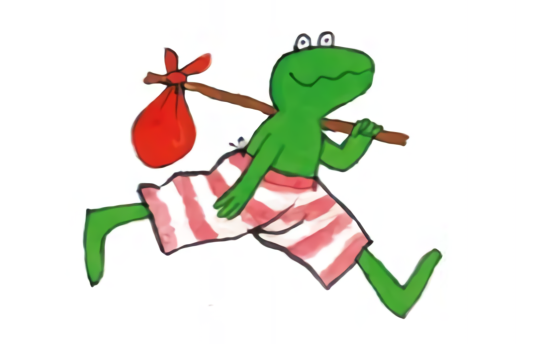

Ontwerp van algoritmen#
Use it or lose it!
Ontwerpen van wat?#
Code (syntax)
Algoritmen! (ideeën)
Algoritmen#
def rem_all(e, L):
"""Returns sequence L with all e's rmovd
...
Top down#

Visualiseren#

Opdelen#

Bouwen#

Combineren#

Testen#

Use it or lose it!#
def rem_all(e, L):
"""Returns sequence L with all e's rmovd
"""
if len(L) == 0:
return L
elif L[0] != e:
return L[0:1] + rem_all(e, L[1:]) # use it!
else:
return rem_all(e, L[1:]) # lose it!
Bijvoorbeeld
assert rem_all(42, [5, 7, 42, 8, 42]) == [5, 7, 8]
assert rem_all("q", "qaqqlqqiqqiiqeqqnqs") == "aliiiens"

Een bekend patroon#
def max(L):
"""Find max value in L
"""
if len(L) < 2:
return L[0]
max_of_rest = max(L[1:])
if L[0] > max_of_rest:
return L[0] # use it!
else:
return max_of_rest # lose it!
We hopen dat je het use it or lose it! patroon inmiddels herkent? Denk bijvoorbeeld aan de recursieve implementatie van de ingebouwde functie max, een oude bekende! Denk ook terug aan andere voorbeelden of opgaven waar steeds een vergelijkbare keus werd gemaakt.
Opgave 1#
Van rem_all naar rem_one#
Verwijder e één keer uit L
def rem_one(e, L):
"""Returns sequence L with one e rmoved
"""
if len(L) == 0:
return L
elif L[0] != e:
return L[0:1] + rem_one(e, L[1:])
else:
return rem_one(e, L[1:])
Bijvoorbeeld
assert rem_one(8, [7, 8, 9, 8]) == [7, 9, 8]
assert rem_one("d", "coded") == "coed"
Deze rem_one werkt nog als rem_all. Eén onderdeel moet worden aangepast, welke is het?
Als L[0] niet gelijk is aan e, gebruik het dan. Maar als sprake is van een lose it situatie dan zal dit maar één keer moeten gebeuren. Een herhaling (recursie) is in dit geval dus niet nodig en het volstaat om de rest van L direct terug te geven.
Opgave 2#
Van rem_one naar rem_up_to#
Verwijder alles uit L tot en met de eerste e
def rem_up_to(e, L):
"""Returns sequence L up to the first e moved
"""
if len(L) == 0:
return L
elif L[0] != e:
return L[0:1] + rem_up_to(e, L[1:])
else:
return L[1:]
Bijvoorbeeld
assert rem_up_to(8, [7, 8, 9, 8]) == [9, 8]
assert rem_up_to("d", "coded") == "ed")
Deze rem_up_to werkt nog als rem_one. Eén onderdeel moet worden aangepast, welke is het?
In dit geval hebben we geen nut meer voor een use it geval L[0], want alles tot een met (de use it’s moeten juist worden verwijderd). Misschien is het in dit geval toepasselijker te spreken over forget it!
Het knapzak probleem#

Kikker gaat op reis en kan maar tot een maximaal gewicht aan handige dingen meenemen in zijn knapzak. Dit wordt ook een subset-sum probleem genoemd.
Base case#
def subset(capacity, items):
"""Given a capacity and a list of positive-number items,
subset returns the largest sum that can be made from the
items _without exceeding capacity_.
"""
if capacity <= 0 or len(items) == 0:
return 0
Het eerste geval en de rest#
def subset(capacity, items):
"""Given a capacity and a list of positive-number items,
subset returns the largest sum that can be made from the
items _without exceeding capacity_.
"""
if capacity <= 0 or len(items) == 0:
return 0
first = items[0]
rest = items[1:]
max capacity reached :)#
def subset(capacity, items):
"""Given a capacity and a list of positive-number items,
subset returns the largest sum that can be made from the
items _without exceeding capacity_.
"""
if capacity <= 0 or len(items) == 0:
return 0
first = items[0]
rest = items[1:]
if first == capacity:
return first # use the first - and are done
Op basis van een eerste waarde en de rest kan gelijk al een eerst besluit worden genomen: we zijn klaar als het eerste geval gelijk is aan de capaciteit!
max capacity exceeded :(#
def subset(capacity, items):
"""Given a capacity and a list of positive-number items,
subset returns the largest sum that can be made from the
items _without exceeding capacity_.
"""
if capacity <= 0 or len(items) == 0:
return 0
first = items[0]
rest = items[1:]
if first == capacity:
return first # use the first and we're done
if first > capacity:
return subset(capacity, rest) # forget the first completely
Het is ook mogelijk dat het eerste geval first de capaciteit overschrijdt. We hebben in dit geval niets aan first en kunnen het maar beter vergeten en het probleem herhalen met de rest.
max capacity not reached…#
if first < capacity:
...
Een lastige keus#
capacity = 10
items = [8, 4, 6]
Het is beter om items[0] niet te gebruiken
In dit geval is het verstandiger om 8 te laten vallen (lose it) om vervolgens 4 én 6 te gebruiken (use it).
capacity = 10
items = [4, 8, 6]
Het is beter om items[0] wel te gebruiken
Maar in dit geval is het verstandiger om 4 wél te gebruiken (use it) om vervolgens 8 niet te gebruiken (lose it) en tot slot 6 wel te gebruiken (use it).
Hoe kan je nu tussen deze twee mogelijkheden kiezen, of beter, hoe zou je een algemene oplossing voor dit probleem kunnen vinden?
De makkelijke keus#
Gebruik beide en kies de beste uitkomst!
Use it!
useit = first + subset(capacity - first, rest)
Lose it!
loseit = subset(capacity, rest)
capacity to the max!
max(useit, loseit)
To the max#
def subset(capacity, items):
"""Given a capacity and a list of positive-number items,
subset returns the largest sum that can be made from the
items _without exceeding capacity_.
"""
if capacity <= 0 or len(items) == 0:
return 0
first = items[0]
rest = items[1:]
if first == capacity:
return first # use the first and we're done
if first > capacity:
return subset(capacity, rest) # forget the first completely
if first < capacity:
useit = first + subset(capacity - first, rest) # use it!
loseit = subset(capacity, rest) # lose it!
return max(useit, loseit)
Hoe werkt dit?#
if first < capacity:
useit = first + subset(capacity - first, rest)
loseit = subset(capacity, rest)
return max(useit, loseit)

Zowel useit als loseit worden op de stack geplaatst, maar onderweg gebeurt dit natuurlijk vaker tot alle mogelijkeden zijn uitgeput (de base case is bereikt). Recursie zie je hier heel goed terugkomen in de vertakkingen en met max(useit, loseit) wordt het een beslisboom. Probeer van boven naar beneden en weer terug omhoog de useit en loseit aanroepen en tussentijdse resultaten te volgen.